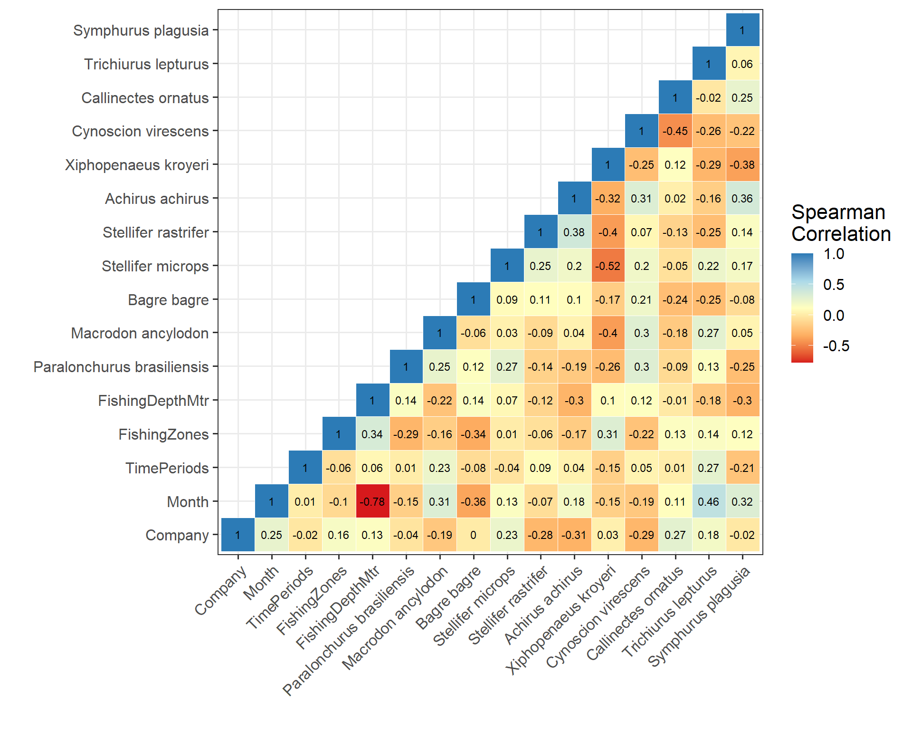

10 Correlation Analysis for Primary Species
10.1 Weight Proportions
Data preparation
Top10names.plusone <- c("Macrodon ancylodon",
"Callinectes ornatus",
"Stellifer rastrifer",
"Stellifer microps",
"Cynoscion virescens",
"Symphurus plagusia",
"Bagre bagre",
"Trichiurus lepturus",
"Achirus achirus",
"Paralonchurus brasiliensis",
"Xiphopenaeus kroyeri")
# Modifying data
species.cor <- ObserverData %>%
filter(LatinNames %in% Top10names.plusone) %>%
group_by(DragID2) %>%
mutate(PropWeight = CpueKGHR/sum(CpueKGHR)) %>%
ungroup() %>%
dplyr::select(LatinNames,
DragID2,
PropWeight,
Company,
Month,
TimePeriods,
FishingZones,
FishingDepthMtr)
species.cor.2.temp <- species.cor %>%
pivot_wider(names_from = LatinNames,
values_from = PropWeight,
values_fill = 0)
head(species.cor.2.temp) %>%
kbl() %>%
kable_classic() %>%
row_spec(0, bold = TRUE) %>%
kable_styling(fixed_thead = T,
bootstrap_options = "condensed") %>%
scroll_box(width = "750px", height = "300px")| DragID2 | Company | Month | TimePeriods | FishingZones | FishingDepthMtr | Paralonchurus brasiliensis | Macrodon ancylodon | Bagre bagre | Stellifer microps | Stellifer rastrifer | Achirus achirus | Xiphopenaeus kroyeri | Cynoscion virescens | Callinectes ornatus | Trichiurus lepturus | Symphurus plagusia |
|---|---|---|---|---|---|---|---|---|---|---|---|---|---|---|---|---|
| 1 | NHS | 2 | Day | 6 | 18 | 0.0026209 | 0.0158635 | 0.0227147 | 0.0634081 | 0.1057109 | 0.0039544 | 0.7106401 | 0.0264392 | 0.0423027 | 0.0010576 | 0.0052878 |
| 2 | NHS | 2 | Night | 6 | 18 | 0.0120895 | 0.0028510 | 0.0461566 | 0.0851678 | 0.0922772 | 0.0022735 | 0.6971490 | 0.0496933 | 0.0085168 | 0.0009744 | 0.0028510 |
| 3 | NHS | 2 | Day | 6 | 18 | 0.0453140 | 0.0340191 | 0.0453140 | 0.0538299 | 0.0906728 | 0.0019273 | 0.6519206 | 0.0736856 | 0.0028237 | 0.0002241 | 0.0002689 |
| 4 | NHS | 2 | Day | 6 | 16 | 0.0081802 | 0.0544458 | 0.0816497 | 0.0340144 | 0.1497165 | 0.0000761 | 0.6226078 | 0.0476354 | 0.0013697 | 0.0001522 | 0.0001522 |
| 5 | NHS | 2 | Night | 6 | 16 | 0.0249838 | 0.0187541 | 0.0312135 | 0.0280986 | 0.0874108 | 0.0002596 | 0.7079169 | 0.0999351 | 0.0012330 | 0.0001298 | 0.0000649 |
| 6 | NHS | 2 | Night | 6 | 18 | 0.0136850 | 0.1094512 | 0.0638346 | 0.0820813 | 0.1550392 | 0.0027370 | 0.5183749 | 0.0501782 | 0.0000570 | 0.0000000 | 0.0045617 |
10.1.1 Correlation plots
10.1.2 Correlation matrix
flattenCorrMatrix <- function(cormat, pmat) {
ut <- upper.tri(cormat)
data.frame(
row = rownames(cormat)[row(cormat)[ut]],
column = rownames(cormat)[col(cormat)[ut]],
cor = (cormat)[ut],
p = pmat[ut])
}
# Drawing a correlogram
cor.mat <- cor(species.cor.2,
method = "spearman")
cor.mat[lower.tri(cor.mat)] <- NA
cor.mat <- reshape2::melt(cor.mat)
cor.mat <- na.omit(cor.mat)
cor.mat$Var1 <- factor(cor.mat$Var1,levels = unique(cor.mat$Var1))
cor.mat$Var2 <- factor(cor.mat$Var2,levels = unique(cor.mat$Var2))
ggplot(data = cor.mat, aes(Var2, Var1, fill = value)) +
geom_tile(color = "white") +
scale_fill_gradientn(colours = brewer.pal(5,"RdYlBu"),
name = "Spearman\nCorrelation") +
theme_bw(base_size = 15) +
theme(axis.text.x = element_text(
angle = 45, vjust = 1, hjust = 1
),
legend.title = element_text(size = 16)
# ,
# legend.position = "top"
) +
coord_fixed() +
labs(x = "",y = "")+
geom_text(aes(label = round(value, 2)), size = 3)# Flattening matrix
cor.mtx.2 <- rcorr(as.matrix(species.cor.2))
flattenCorrMatrix(round(cor.mtx.2$r,3),
format(round(cor.mtx.2$P,3),
scientific = FALSE)) %>%
arrange(p) row column cor p
1 Stellifer microps Xiphopenaeus kroyeri -0.530 0.000
2 Stellifer rastrifer Xiphopenaeus kroyeri -0.450 0.001
3 Macrodon ancylodon Xiphopenaeus kroyeri -0.348 0.016
4 Xiphopenaeus kroyeri Trichiurus lepturus -0.315 0.031
5 Cynoscion virescens Symphurus plagusia -0.214 0.148
6 Cynoscion virescens Trichiurus lepturus -0.206 0.165
7 Macrodon ancylodon Cynoscion virescens 0.205 0.167
8 Stellifer rastrifer Callinectes ornatus -0.199 0.181
9 Cynoscion virescens Callinectes ornatus -0.198 0.182
10 Paralonchurus brasiliensis Xiphopenaeus kroyeri -0.197 0.183
11 Achirus achirus Xiphopenaeus kroyeri -0.197 0.185
12 Achirus achirus Symphurus plagusia 0.188 0.205
13 Macrodon ancylodon Trichiurus lepturus 0.177 0.235
14 Macrodon ancylodon Callinectes ornatus -0.176 0.236
15 Xiphopenaeus kroyeri Symphurus plagusia -0.174 0.243
16 Xiphopenaeus kroyeri Cynoscion virescens -0.172 0.248
17 Stellifer microps Stellifer rastrifer 0.163 0.274
18 Stellifer rastrifer Trichiurus lepturus -0.162 0.278
19 Paralonchurus brasiliensis Symphurus plagusia -0.161 0.279
20 Paralonchurus brasiliensis Stellifer microps 0.155 0.298
21 Stellifer microps Callinectes ornatus -0.138 0.355
22 Stellifer microps Achirus achirus 0.135 0.366
23 Paralonchurus brasiliensis Macrodon ancylodon 0.133 0.374
24 Macrodon ancylodon Stellifer rastrifer -0.119 0.424
25 Stellifer microps Symphurus plagusia -0.106 0.480
26 Stellifer microps Cynoscion virescens 0.103 0.491
27 Bagre bagre Xiphopenaeus kroyeri -0.100 0.505
28 Paralonchurus brasiliensis Achirus achirus -0.095 0.527
29 Paralonchurus brasiliensis Callinectes ornatus -0.093 0.534
30 Stellifer rastrifer Achirus achirus 0.090 0.546
31 Macrodon ancylodon Stellifer microps -0.088 0.556
32 Bagre bagre Cynoscion virescens 0.088 0.557
33 Paralonchurus brasiliensis Cynoscion virescens 0.088 0.558
34 Bagre bagre Symphurus plagusia -0.085 0.569
35 Macrodon ancylodon Bagre bagre -0.076 0.613
36 Stellifer rastrifer Cynoscion virescens -0.074 0.620
37 Macrodon ancylodon Symphurus plagusia -0.068 0.649
38 Callinectes ornatus Trichiurus lepturus -0.067 0.653
39 Bagre bagre Stellifer microps -0.064 0.670
40 Achirus achirus Callinectes ornatus -0.063 0.673
41 Bagre bagre Callinectes ornatus -0.063 0.674
42 Bagre bagre Trichiurus lepturus -0.057 0.701
43 Paralonchurus brasiliensis Trichiurus lepturus -0.057 0.702
44 Achirus achirus Trichiurus lepturus -0.052 0.731
45 Trichiurus lepturus Symphurus plagusia -0.038 0.798
46 Achirus achirus Cynoscion virescens 0.029 0.848
47 Callinectes ornatus Symphurus plagusia 0.028 0.852
48 Bagre bagre Achirus achirus -0.027 0.859
49 Bagre bagre Stellifer rastrifer 0.024 0.874
50 Xiphopenaeus kroyeri Callinectes ornatus -0.021 0.887
51 Stellifer rastrifer Symphurus plagusia 0.018 0.903
52 Macrodon ancylodon Achirus achirus -0.009 0.950
53 Paralonchurus brasiliensis Bagre bagre -0.008 0.958
54 Paralonchurus brasiliensis Stellifer rastrifer 0.005 0.971
55 Stellifer microps Trichiurus lepturus -0.003 0.98410.2 CPUE
Data preparation
Top10names.plusone <- c("Macrodon ancylodon",
"Callinectes ornatus",
"Stellifer rastrifer",
"Stellifer microps",
"Cynoscion virescens",
"Symphurus plagusia",
"Bagre bagre",
"Trichiurus lepturus",
"Achirus achirus",
"Paralonchurus brasiliensis",
"Xiphopenaeus kroyeri")
# Modifying data
species.cor <- ObserverData %>%
filter(LatinNames %in% Top10names.plusone) %>%
group_by(DragID2) %>%
mutate(PropWeight = CpueKGHR/sum(CpueKGHR)) %>%
ungroup() %>%
dplyr::select(LatinNames,
DragID2,
CpueKGHR,
Company,
Month,
TimePeriods,
FishingZones,
FishingDepthMtr)
species.cor.3.temp <- species.cor %>%
pivot_wider(names_from = LatinNames,
values_from = CpueKGHR,
values_fill = 0)
head(species.cor.3.temp) # A tibble: 6 x 17
DragID2 Company Month TimePeriods FishingZones FishingDepthMtr
<dbl> <chr> <dbl> <chr> <dbl> <dbl>
1 1 NHS 2 Day 6 18
2 2 NHS 2 Night 6 18
3 3 NHS 2 Day 6 18
4 4 NHS 2 Day 6 16
5 5 NHS 2 Night 6 16
6 6 NHS 2 Night 6 18
# ... with 11 more variables: `Paralonchurus brasiliensis` <dbl>, `Macrodon
# ancylodon` <dbl>, `Bagre bagre` <dbl>, `Stellifer microps` <dbl>,
# `Stellifer rastrifer` <dbl>, `Achirus achirus` <dbl>, `Xiphopenaeus
# kroyeri` <dbl>, `Cynoscion virescens` <dbl>, `Callinectes ornatus` <dbl>,
# `Trichiurus lepturus` <dbl>, `Symphurus plagusia` <dbl>10.2.1 Correlation plots
10.2.2 Correlation matrix
# Drawing a correlogram
cor.mat <- cor(species.cor.3,
method = "spearman")
cor.mat[lower.tri(cor.mat)] <- NA
cor.mat <- reshape2::melt(cor.mat)
cor.mat <- na.omit(cor.mat)
cor.mat$Var1 <- factor(cor.mat$Var1,levels = unique(cor.mat$Var1))
cor.mat$Var2 <- factor(cor.mat$Var2,levels = unique(cor.mat$Var2))
ggplot(data = cor.mat, aes(Var2, Var1, fill = value)) +
geom_tile(color = "white") +
scale_fill_gradientn(colours = brewer.pal(5,"RdYlBu"),
name = "Spearman\nCorrelation") +
theme_bw(base_size = 15) +
theme(axis.text.x = element_text(
angle = 45, vjust = 1, hjust = 1
),
legend.title = element_text(size = 16)
# ,
# legend.position = "top"
) +
coord_fixed() +
labs(x = "",y = "")+
geom_text(aes(label = round(value, 2)), size = 3)# Flattening matrix
cor.mtx.2 <- rcorr(as.matrix(species.cor.3))
flattenCorrMatrix(round(cor.mtx.2$r,3),
format(round(cor.mtx.2$P,3),
scientific = FALSE)) %>%
arrange(p) row column cor p
1 Macrodon ancylodon Cynoscion virescens 0.434 0.002
2 Stellifer microps Stellifer rastrifer 0.363 0.012
3 Macrodon ancylodon Trichiurus lepturus 0.272 0.064
4 Macrodon ancylodon Stellifer rastrifer 0.229 0.121
5 Macrodon ancylodon Stellifer microps 0.226 0.126
6 Cynoscion virescens Callinectes ornatus -0.199 0.181
7 Paralonchurus brasiliensis Xiphopenaeus kroyeri -0.196 0.187
8 Paralonchurus brasiliensis Stellifer rastrifer 0.185 0.213
9 Macrodon ancylodon Callinectes ornatus -0.166 0.265
10 Macrodon ancylodon Achirus achirus 0.161 0.281
11 Cynoscion virescens Symphurus plagusia -0.160 0.284
12 Cynoscion virescens Trichiurus lepturus -0.156 0.294
13 Paralonchurus brasiliensis Stellifer microps 0.153 0.305
14 Stellifer rastrifer Callinectes ornatus -0.153 0.305
15 Bagre bagre Stellifer rastrifer 0.125 0.403
16 Achirus achirus Symphurus plagusia 0.123 0.410
17 Achirus achirus Cynoscion virescens 0.123 0.412
18 Paralonchurus brasiliensis Symphurus plagusia -0.122 0.413
19 Stellifer rastrifer Symphurus plagusia 0.120 0.423
20 Stellifer microps Callinectes ornatus -0.117 0.433
21 Stellifer rastrifer Achirus achirus 0.111 0.459
22 Stellifer microps Achirus achirus 0.107 0.474
23 Paralonchurus brasiliensis Callinectes ornatus -0.105 0.481
24 Stellifer microps Cynoscion virescens 0.103 0.491
25 Paralonchurus brasiliensis Bagre bagre -0.098 0.513
26 Bagre bagre Callinectes ornatus -0.095 0.527
27 Paralonchurus brasiliensis Macrodon ancylodon 0.094 0.528
28 Macrodon ancylodon Symphurus plagusia -0.093 0.533
29 Paralonchurus brasiliensis Achirus achirus -0.092 0.540
30 Paralonchurus brasiliensis Trichiurus lepturus -0.090 0.548
31 Bagre bagre Cynoscion virescens 0.083 0.579
32 Macrodon ancylodon Xiphopenaeus kroyeri 0.082 0.585
33 Stellifer rastrifer Trichiurus lepturus -0.070 0.642
34 Achirus achirus Callinectes ornatus -0.067 0.656
35 Achirus achirus Xiphopenaeus kroyeri -0.065 0.664
36 Stellifer rastrifer Cynoscion virescens 0.061 0.682
37 Xiphopenaeus kroyeri Trichiurus lepturus 0.056 0.710
38 Bagre bagre Xiphopenaeus kroyeri -0.051 0.733
39 Xiphopenaeus kroyeri Callinectes ornatus -0.050 0.739
40 Callinectes ornatus Trichiurus lepturus -0.048 0.749
41 Xiphopenaeus kroyeri Cynoscion virescens 0.046 0.757
42 Bagre bagre Achirus achirus 0.043 0.772
43 Achirus achirus Trichiurus lepturus -0.023 0.878
44 Macrodon ancylodon Bagre bagre 0.019 0.897
45 Paralonchurus brasiliensis Cynoscion virescens 0.018 0.905
46 Stellifer microps Symphurus plagusia -0.015 0.919
47 Bagre bagre Stellifer microps -0.015 0.921
48 Stellifer microps Trichiurus lepturus 0.014 0.924
49 Bagre bagre Trichiurus lepturus -0.011 0.943
50 Xiphopenaeus kroyeri Symphurus plagusia 0.006 0.966
51 Bagre bagre Symphurus plagusia 0.005 0.973
52 Stellifer microps Xiphopenaeus kroyeri 0.005 0.976
53 Stellifer rastrifer Xiphopenaeus kroyeri -0.004 0.980
54 Trichiurus lepturus Symphurus plagusia -0.004 0.980
55 Callinectes ornatus Symphurus plagusia 0.004 0.98110.3 Species with Factor Variables Correlation
10.4 Weight Proportions
species.fv.cor <- species.cor.2.temp[,2:17] %>%
mutate(Company = case_when(Company == "PSI" ~ 1,
Company == "NHS" ~ 0),
TimePeriods = case_when(TimePeriods == "Day" ~ 1,
TimePeriods == "Night" ~ 0))10.4.1 Correlation plots
10.4.2 Correlation matrix
# Drawing a correlogram
cor.mat <- cor(species.fv.cor,
method = "spearman")
cor.mat[lower.tri(cor.mat)] <- NA
cor.mat <- reshape2::melt(cor.mat)
cor.mat <- na.omit(cor.mat)
cor.mat$Var1 <- factor(cor.mat$Var1,levels = unique(cor.mat$Var1))
cor.mat$Var2 <- factor(cor.mat$Var2,levels = unique(cor.mat$Var2))
ggplot(data = cor.mat, aes(Var2, Var1, fill = value)) +
geom_tile(color = "white") +
scale_fill_gradientn(colours = brewer.pal(5,"RdYlBu"),
name = "Spearman\nCorrelation") +
theme_bw(base_size = 15) +
theme(axis.text.x = element_text(
angle = 45, vjust = 1, hjust = 1
),
legend.title = element_text(size = 16)
# ,
# legend.position = "top"
) +
coord_fixed() +
labs(x = "",y = "")+
geom_text(aes(label = round(value, 2)), size = 3)
# Flattening matrix
cor.mtx.2 <- rcorr(as.matrix(species.fv.cor))
flattenCorrMatrix(round(cor.mtx.2$r,3),
format(round(cor.mtx.2$P,3),
scientific = FALSE)) %>%
arrange(p) row column cor p
1 Month FishingDepthMtr -0.784 0.000
2 Stellifer microps Xiphopenaeus kroyeri -0.530 0.000
3 Stellifer rastrifer Xiphopenaeus kroyeri -0.450 0.001
4 FishingZones Bagre bagre -0.412 0.004
5 Month Bagre bagre -0.389 0.007
6 Macrodon ancylodon Xiphopenaeus kroyeri -0.348 0.016
7 FishingZones Xiphopenaeus kroyeri 0.333 0.022
8 Xiphopenaeus kroyeri Trichiurus lepturus -0.315 0.031
9 FishingDepthMtr Achirus achirus -0.291 0.047
10 Company Macrodon ancylodon -0.278 0.059
11 Month Macrodon ancylodon 0.273 0.063
12 TimePeriods Trichiurus lepturus 0.273 0.064
13 Company Stellifer microps 0.270 0.066
14 Company Stellifer rastrifer -0.231 0.118
15 Company Cynoscion virescens -0.229 0.122
16 Month Trichiurus lepturus 0.228 0.123
17 FishingZones Callinectes ornatus -0.224 0.130
18 Month Cynoscion virescens -0.218 0.141
19 Cynoscion virescens Symphurus plagusia -0.214 0.148
20 Month Achirus achirus 0.211 0.155
21 Cynoscion virescens Trichiurus lepturus -0.206 0.165
22 Macrodon ancylodon Cynoscion virescens 0.205 0.167
23 Company Paralonchurus brasiliensis 0.202 0.173
24 TimePeriods Macrodon ancylodon 0.202 0.173
25 FishingDepthMtr Bagre bagre 0.200 0.178
26 Stellifer rastrifer Callinectes ornatus -0.199 0.181
27 Cynoscion virescens Callinectes ornatus -0.198 0.182
28 Paralonchurus brasiliensis Xiphopenaeus kroyeri -0.197 0.183
29 Achirus achirus Xiphopenaeus kroyeri -0.197 0.185
30 FishingZones FishingDepthMtr 0.191 0.197
31 FishingZones Paralonchurus brasiliensis -0.190 0.200
32 Achirus achirus Symphurus plagusia 0.188 0.205
33 TimePeriods Xiphopenaeus kroyeri -0.187 0.208
34 Macrodon ancylodon Trichiurus lepturus 0.177 0.235
35 Macrodon ancylodon Callinectes ornatus -0.176 0.236
36 Xiphopenaeus kroyeri Symphurus plagusia -0.174 0.243
37 FishingZones Macrodon ancylodon -0.172 0.248
38 Xiphopenaeus kroyeri Cynoscion virescens -0.172 0.248
39 FishingDepthMtr Macrodon ancylodon -0.166 0.264
40 Month Stellifer microps 0.165 0.267
41 FishingDepthMtr Cynoscion virescens 0.164 0.272
42 Company Callinectes ornatus 0.164 0.272
43 Stellifer microps Stellifer rastrifer 0.163 0.274
44 FishingDepthMtr Symphurus plagusia -0.162 0.276
45 FishingDepthMtr Trichiurus lepturus -0.162 0.278
46 Stellifer rastrifer Trichiurus lepturus -0.162 0.278
47 Paralonchurus brasiliensis Symphurus plagusia -0.161 0.279
48 Paralonchurus brasiliensis Stellifer microps 0.155 0.298
49 TimePeriods Symphurus plagusia -0.149 0.316
50 FishingDepthMtr Paralonchurus brasiliensis 0.149 0.319
51 TimePeriods Callinectes ornatus -0.140 0.349
52 TimePeriods Stellifer rastrifer 0.139 0.351
53 Stellifer microps Callinectes ornatus -0.138 0.355
54 Stellifer microps Achirus achirus 0.135 0.366
55 Paralonchurus brasiliensis Macrodon ancylodon 0.133 0.374
56 FishingZones Symphurus plagusia 0.132 0.376
57 Month Callinectes ornatus -0.124 0.408
58 Company Symphurus plagusia 0.123 0.409
59 FishingZones Trichiurus lepturus -0.123 0.412
60 Month Xiphopenaeus kroyeri -0.120 0.420
61 Macrodon ancylodon Stellifer rastrifer -0.119 0.424
62 Stellifer microps Symphurus plagusia -0.106 0.480
63 FishingDepthMtr Xiphopenaeus kroyeri 0.105 0.481
64 Company Month 0.103 0.491
65 Stellifer microps Cynoscion virescens 0.103 0.491
66 FishingDepthMtr Stellifer rastrifer -0.101 0.501
67 TimePeriods Paralonchurus brasiliensis 0.100 0.502
68 Bagre bagre Xiphopenaeus kroyeri -0.100 0.505
69 TimePeriods FishingDepthMtr 0.097 0.515
70 Paralonchurus brasiliensis Achirus achirus -0.095 0.527
71 FishingZones Stellifer rastrifer -0.093 0.534
72 Paralonchurus brasiliensis Callinectes ornatus -0.093 0.534
73 Stellifer rastrifer Achirus achirus 0.090 0.546
74 Macrodon ancylodon Stellifer microps -0.088 0.556
75 Bagre bagre Cynoscion virescens 0.088 0.557
76 Paralonchurus brasiliensis Cynoscion virescens 0.088 0.558
77 Month Symphurus plagusia 0.086 0.566
78 TimePeriods FishingZones -0.085 0.569
79 Bagre bagre Symphurus plagusia -0.085 0.569
80 TimePeriods Bagre bagre 0.084 0.574
81 FishingDepthMtr Callinectes ornatus 0.079 0.596
82 Macrodon ancylodon Bagre bagre -0.076 0.613
83 Stellifer rastrifer Cynoscion virescens -0.074 0.620
84 Month Paralonchurus brasiliensis -0.072 0.631
85 FishingZones Cynoscion virescens -0.068 0.648
86 Macrodon ancylodon Symphurus plagusia -0.068 0.649
87 Callinectes ornatus Trichiurus lepturus -0.067 0.653
88 Bagre bagre Stellifer microps -0.064 0.670
89 Achirus achirus Callinectes ornatus -0.063 0.673
90 Bagre bagre Callinectes ornatus -0.063 0.674
91 Company Trichiurus lepturus -0.063 0.676
92 Company Bagre bagre 0.062 0.677
93 Bagre bagre Trichiurus lepturus -0.057 0.701
94 Company FishingDepthMtr 0.057 0.702
95 Paralonchurus brasiliensis Trichiurus lepturus -0.057 0.702
96 FishingDepthMtr Stellifer microps 0.056 0.711
97 Achirus achirus Trichiurus lepturus -0.052 0.731
98 TimePeriods Achirus achirus -0.050 0.737
99 FishingZones Stellifer microps 0.049 0.744
100 Company Xiphopenaeus kroyeri 0.048 0.748
101 Company FishingZones 0.044 0.769
102 TimePeriods Stellifer microps -0.042 0.781
103 Month Stellifer rastrifer -0.040 0.789
104 Trichiurus lepturus Symphurus plagusia -0.038 0.798
105 Achirus achirus Cynoscion virescens 0.029 0.848
106 Callinectes ornatus Symphurus plagusia 0.028 0.852
107 Bagre bagre Achirus achirus -0.027 0.859
108 Bagre bagre Stellifer rastrifer 0.024 0.874
109 Company TimePeriods -0.022 0.885
110 Xiphopenaeus kroyeri Callinectes ornatus -0.021 0.887
111 Stellifer rastrifer Symphurus plagusia 0.018 0.903
112 Month TimePeriods 0.018 0.904
113 Company Achirus achirus 0.015 0.918
114 Month FishingZones 0.012 0.937
115 FishingZones Achirus achirus -0.010 0.946
116 Macrodon ancylodon Achirus achirus -0.009 0.950
117 TimePeriods Cynoscion virescens -0.009 0.950
118 Paralonchurus brasiliensis Bagre bagre -0.008 0.958
119 Paralonchurus brasiliensis Stellifer rastrifer 0.005 0.971
120 Stellifer microps Trichiurus lepturus -0.003 0.98410.5 CPUE
Data preparation
species.fv.cor.2 <- species.cor.3.temp[,2:17] %>%
mutate(Company = case_when(Company == "PSI" ~ 1,
Company == "NHS" ~ 0),
TimePeriods = case_when(TimePeriods == "Day" ~ 1,
TimePeriods == "Night" ~ 0))10.5.1 Correlation plots
10.5.2 Correlation matrix
# Drawing a correlogram
cor.mat <- cor(species.fv.cor.2,
method = "spearman")
cor.mat[lower.tri(cor.mat)] <- NA
cor.mat <- reshape2::melt(cor.mat)
cor.mat <- na.omit(cor.mat)
cor.mat$Var1 <- factor(cor.mat$Var1,levels = unique(cor.mat$Var1))
cor.mat$Var2 <- factor(cor.mat$Var2,levels = unique(cor.mat$Var2))
ggplot(data = cor.mat, aes(Var2, Var1, fill = value)) +
geom_tile(color = "white") +
scale_fill_gradientn(colours = brewer.pal(5,"RdYlBu"),
name = "Spearman\nCorrelation") +
theme_bw(base_size = 15) +
theme(axis.text.x = element_text(
angle = 45, vjust = 1, hjust = 1
),
legend.title = element_text(size = 16)
# ,
# legend.position = "top"
) +
coord_fixed() +
labs(x = "",y = "")+
geom_text(aes(label = round(value, 2)), size = 3)# Flattening matrix
cor.mtx.2 <- rcorr(as.matrix(species.fv.cor.2))
flattenCorrMatrix(round(cor.mtx.2$r,3),
format(round(cor.mtx.2$P,3),
scientific = FALSE)) %>%
arrange(p) row column cor p
1 Month FishingDepthMtr -0.784 0.000
2 FishingZones Xiphopenaeus kroyeri 0.483 0.001
3 Macrodon ancylodon Cynoscion virescens 0.434 0.002
4 Stellifer microps Stellifer rastrifer 0.363 0.012
5 Company Macrodon ancylodon -0.332 0.023
6 FishingDepthMtr Achirus achirus -0.308 0.035
7 FishingZones Bagre bagre -0.304 0.038
8 Month Macrodon ancylodon 0.289 0.049
9 Month Bagre bagre -0.288 0.049
10 Macrodon ancylodon Trichiurus lepturus 0.272 0.064
11 TimePeriods Trichiurus lepturus 0.244 0.099
12 Company Cynoscion virescens -0.230 0.120
13 Macrodon ancylodon Stellifer rastrifer 0.229 0.121
14 Month Trichiurus lepturus 0.229 0.122
15 Month Achirus achirus 0.228 0.123
16 Macrodon ancylodon Stellifer microps 0.226 0.126
17 Company Stellifer microps 0.212 0.153
18 FishingZones Symphurus plagusia 0.201 0.176
19 Cynoscion virescens Callinectes ornatus -0.199 0.181
20 TimePeriods Macrodon ancylodon 0.196 0.186
21 Paralonchurus brasiliensis Xiphopenaeus kroyeri -0.196 0.187
22 FishingZones FishingDepthMtr 0.191 0.197
23 FishingZones Callinectes ornatus -0.185 0.212
24 Paralonchurus brasiliensis Stellifer rastrifer 0.185 0.213
25 Company Callinectes ornatus 0.183 0.217
26 FishingDepthMtr Macrodon ancylodon -0.182 0.221
27 TimePeriods Symphurus plagusia -0.182 0.222
28 Company Paralonchurus brasiliensis 0.175 0.238
29 FishingDepthMtr Trichiurus lepturus -0.175 0.239
30 FishingDepthMtr Paralonchurus brasiliensis 0.170 0.254
31 Macrodon ancylodon Callinectes ornatus -0.166 0.265
32 FishingZones Stellifer microps 0.164 0.271
33 Month Stellifer microps 0.164 0.272
34 Company Symphurus plagusia 0.163 0.273
35 Macrodon ancylodon Achirus achirus 0.161 0.281
36 Cynoscion virescens Symphurus plagusia -0.160 0.284
37 Cynoscion virescens Trichiurus lepturus -0.156 0.294
38 Paralonchurus brasiliensis Stellifer microps 0.153 0.305
39 Stellifer rastrifer Callinectes ornatus -0.153 0.305
40 Company Stellifer rastrifer -0.149 0.319
41 FishingDepthMtr Bagre bagre 0.144 0.335
42 Month Cynoscion virescens -0.141 0.344
43 TimePeriods Paralonchurus brasiliensis 0.138 0.355
44 Company Xiphopenaeus kroyeri 0.132 0.377
45 TimePeriods Callinectes ornatus -0.130 0.383
46 Bagre bagre Stellifer rastrifer 0.125 0.403
47 FishingZones Paralonchurus brasiliensis -0.123 0.408
48 Achirus achirus Symphurus plagusia 0.123 0.410
49 FishingDepthMtr Cynoscion virescens 0.123 0.412
50 Achirus achirus Cynoscion virescens 0.123 0.412
51 Paralonchurus brasiliensis Symphurus plagusia -0.122 0.413
52 Stellifer rastrifer Symphurus plagusia 0.120 0.423
53 Stellifer microps Callinectes ornatus -0.117 0.433
54 Month Callinectes ornatus -0.117 0.434
55 TimePeriods Bagre bagre 0.115 0.442
56 Stellifer rastrifer Achirus achirus 0.111 0.459
57 Stellifer microps Achirus achirus 0.107 0.474
58 Paralonchurus brasiliensis Callinectes ornatus -0.105 0.481
59 Company Month 0.103 0.491
60 Stellifer microps Cynoscion virescens 0.103 0.491
61 TimePeriods Stellifer rastrifer 0.102 0.496
62 Paralonchurus brasiliensis Bagre bagre -0.098 0.513
63 TimePeriods FishingDepthMtr 0.097 0.515
64 Bagre bagre Callinectes ornatus -0.095 0.527
65 Paralonchurus brasiliensis Macrodon ancylodon 0.094 0.528
66 FishingDepthMtr Symphurus plagusia -0.093 0.533
67 Macrodon ancylodon Symphurus plagusia -0.093 0.533
68 Company Trichiurus lepturus -0.093 0.536
69 Paralonchurus brasiliensis Achirus achirus -0.092 0.540
70 TimePeriods Stellifer microps -0.090 0.545
71 FishingDepthMtr Stellifer rastrifer -0.090 0.546
72 Paralonchurus brasiliensis Trichiurus lepturus -0.090 0.548
73 FishingDepthMtr Xiphopenaeus kroyeri 0.087 0.560
74 TimePeriods FishingZones -0.085 0.569
75 Bagre bagre Cynoscion virescens 0.083 0.579
76 FishingDepthMtr Callinectes ornatus 0.082 0.584
77 Macrodon ancylodon Xiphopenaeus kroyeri 0.082 0.585
78 Stellifer rastrifer Trichiurus lepturus -0.070 0.642
79 Achirus achirus Callinectes ornatus -0.067 0.656
80 Achirus achirus Xiphopenaeus kroyeri -0.065 0.664
81 Stellifer rastrifer Cynoscion virescens 0.061 0.682
82 FishingDepthMtr Stellifer microps 0.060 0.686
83 Company FishingDepthMtr 0.057 0.702
84 Month Paralonchurus brasiliensis -0.056 0.710
85 Xiphopenaeus kroyeri Trichiurus lepturus 0.056 0.710
86 Bagre bagre Xiphopenaeus kroyeri -0.051 0.733
87 Xiphopenaeus kroyeri Callinectes ornatus -0.050 0.739
88 Callinectes ornatus Trichiurus lepturus -0.048 0.749
89 Xiphopenaeus kroyeri Cynoscion virescens 0.046 0.757
90 Company FishingZones 0.044 0.769
91 Bagre bagre Achirus achirus 0.043 0.772
92 FishingZones Stellifer rastrifer -0.036 0.811
93 TimePeriods Cynoscion virescens 0.033 0.828
94 TimePeriods Achirus achirus -0.029 0.846
95 FishingZones Macrodon ancylodon -0.027 0.857
96 Month Symphurus plagusia 0.027 0.859
97 FishingZones Trichiurus lepturus -0.026 0.863
98 Achirus achirus Trichiurus lepturus -0.023 0.878
99 Company TimePeriods -0.022 0.885
100 Macrodon ancylodon Bagre bagre 0.019 0.897
101 Month TimePeriods 0.018 0.904
102 Paralonchurus brasiliensis Cynoscion virescens 0.018 0.905
103 Stellifer microps Symphurus plagusia -0.015 0.919
104 Bagre bagre Stellifer microps -0.015 0.921
105 Stellifer microps Trichiurus lepturus 0.014 0.924
106 Company Achirus achirus -0.012 0.934
107 Month FishingZones 0.012 0.937
108 Bagre bagre Trichiurus lepturus -0.011 0.943
109 FishingZones Cynoscion virescens 0.009 0.953
110 Month Xiphopenaeus kroyeri 0.008 0.956
111 FishingZones Achirus achirus -0.008 0.957
112 Company Bagre bagre 0.007 0.961
113 TimePeriods Xiphopenaeus kroyeri -0.007 0.965
114 Xiphopenaeus kroyeri Symphurus plagusia 0.006 0.966
115 Month Stellifer rastrifer 0.005 0.972
116 Bagre bagre Symphurus plagusia 0.005 0.973
117 Stellifer microps Xiphopenaeus kroyeri 0.005 0.976
118 Stellifer rastrifer Xiphopenaeus kroyeri -0.004 0.980
119 Trichiurus lepturus Symphurus plagusia -0.004 0.980
120 Callinectes ornatus Symphurus plagusia 0.004 0.981